按科学问题组织（不按任务编号）。每个模块遵循统一阅读结构：研究目的 → 计算方法 → 核心图表 → 数据解读 → 科学结论 → 局限性；技术口径与审核回执折叠在追溯面板中。
碳酸乙烯酯（EC）得一个电子放多少能量？哪些理论成分决定这个数？
研究目的。电子亲和能（EA）是电解液抗氧化还原分解的核心量化指标。要在理论上给出有意义的数字，必须分清：活性空间内精确求解的部分、活性空间外动态关联的部分、以及溶剂环境的部分。
计算方法。当前主口径采用 own-opt 自优化几何和 C-PCM(40)。方法阶梯并列显示两套几何，三基组敏感性来自历史 LIBE v1 几何。
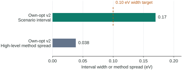
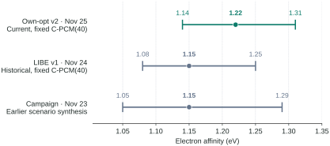
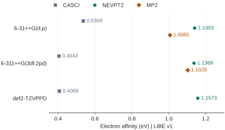
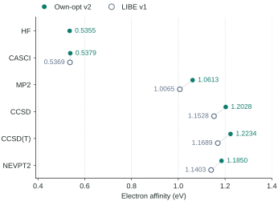
数据解读。方法阶梯显示，EA 对电子关联处理敏感。LIBE v1 与 own-opt v2 的区间同宽（0.17 eV），中心随计算口径改变。当前区间仍宽于 0.10 eV 目标，跨溶剂模型族的敏感性另行对照。 作为对照锚点：CCSD(T) 1.2234 eV、CASCI+NEVPT2 1.1850 eV。
科学结论：电子能 EA = 1.22 eV [1.14, 1.31]（own-opt 主口径）。区间收敛取决于更大活性空间与溶剂口径——而非更好的求解器；零点能是独立振动物理量（ΔZPE = 0.096 eV，EA_ZPE = 1.3469 eV 为独立口径），不直接缩小电子能区间。
局限性。绝对 EA 依赖活性空间/基组/溶剂模型选择；LIBE v1 口径（1.15 eV）与 v2 分列，不可混用。
EC⁻ 环会不会开？开环要走多高的能垒、经过什么过渡态？
研究目的。比较 EC⁻ 异构体的相对能量，并定位与 C–O 键断裂相关的候选过渡态。
计算方法。先比较环状和开环构型，再用 C–O 键长弛豫扫描、无约束过渡态优化和有限差分 Hessian 检查过渡态。
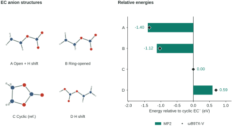
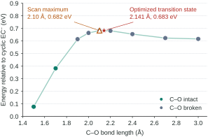
数据解读。受测开环构型中有能量低于环状参考的结构。扫描最高点和独立优化的过渡态接近，过渡态的显著虚频对应包含 C–O 伸缩的方向。
科学结论：弛豫扫描、过渡态优化和 Hessian 给出了 C–O 断裂方向的局部证据。过渡态两侧的严格 IRC 端点连通性尚未确立。
局限性。过渡态采用 UHF/6-31++G**/C-PCM(40)。能垒随方法和基组而变。
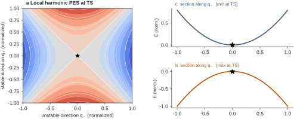
当前浏览器无法绘制交互曲面。上方可查看静态截面。
拖动旋转，双指缩放，点按读取附近的网格点。键盘可用方向键和 + / −。
量子采样 + 子空间对角化（SQD）解出的波函数，与精确解差多少？
研究目的。把 SQD 当作严肃的量子化学工具之前，先证明它在受控条件下与精确解一致——实现层面没有坑。
计算方法。两层验证：2e/2o 玩具体系上与 FCI 恒等式对闸（L0）；生产 10o 窗口上与 CASCI 一致性锚点互证（跨环境、跨实现）；另做 5o/6o/10o 阶段计时剖析。
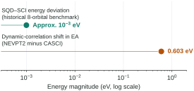
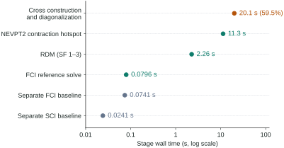
数据解读。L0 恒等式 5.45×10⁻⁷ Ha 通过；生产窗口锚点复现至 10⁻¹² Ha 量级——求解器偏差全程被压在 1.5×10⁻⁵ eV 以下。 性能剖析（部分通过）：10o 子空间构造与对角化用时 20.1 s，占四个计算阶段墙钟时间的 59.5%。Dice 未实测。
科学结论：SQD 实现正确性建立：与精确解的偏差比模型误差低七个数量级，可安全作为下游修正的参考态。
局限性。验证在经典代理层完成；性能剖析（126）为部分通过，阶段计时不作规模律保证。
以 SQD 波函数为参考态做 NEVPT2 修正，能否复现精确关联修正？
研究目的。检验用少量电子构型求得的 SQD 波函数，能否为 NEVPT2 提供足够准确的参考态。
计算方法。先对照五种计算得到的电子亲和能，再比较 C-PCM(40) 冻结场下两种体系的活性空间能量偏差与 NEVPT2 修正偏差。
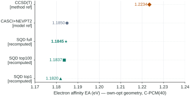
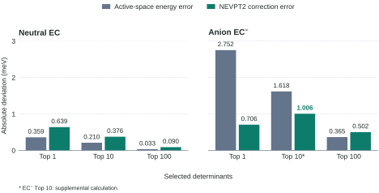
| 中性 EC · Top 1 | 1 个构型，能量偏差 0.3591 meV，修正偏差 0.6390 meV（原对照批次） |
|---|---|
| 中性 EC · Top 10 | 10 个构型，能量偏差 0.2104 meV，修正偏差 0.3756 meV（原对照批次） |
| 中性 EC · Top 100 | 100 个构型，能量偏差 0.0328 meV，修正偏差 0.0897 meV（原对照批次） |
| 阴离子 EC⁻ · Top 1 | 1 个构型，能量偏差 2.7522 meV，修正偏差 0.7062 meV（原对照批次） |
| 阴离子 EC⁻ · Top 10 | 10 个构型，能量偏差 1.6183 meV，修正偏差 1.0063 meV（补算档位） |
| 阴离子 EC⁻ · Top 100 | 100 个构型，能量偏差 0.3646 meV，修正偏差 0.5021 meV（原对照批次） |
| 中性 EC · 完整空间基准 | 63,504 个构型，能量偏差 0 meV，修正偏差 0.0002523 meV（原对照批次） |
| 中性 EC · 随机代理（500 次抽样） | 1 个构型，能量偏差 0.3591 meV，修正偏差 0.6390 meV（原对照批次） |
| 中性 EC · 随机代理（8,000 次抽样） | 1 个构型，能量偏差 0.3591 meV，修正偏差 0.6390 meV（原对照批次） |
| 阴离子 EC⁻ · 完整空间基准 | 52,920 个构型，能量偏差 0 meV，修正偏差 0.0013199 meV（原对照批次） |
| 阴离子 EC⁻ · 随机代理（8,000 次抽样） | 1 个构型，能量偏差 2.7522 meV，修正偏差 0.7062 meV（原对照批次） |
数据解读。图 10 中，SQD 三档的电子亲和能（EA）与 CASCI+NEVPT2 基准最大相差约 3.0 meV。
科学结论：在这组测试中，增加构型使两个体系的活性空间能量偏差逐档减小。阴离子的 NEVPT2 修正偏差在 Top 10 升高，到 Top 100 再降低。
局限性。构型数对照采用经典参考指导的确定性 Top-K 选态，结果限于所测模型与计算设置。
把溶剂极化场引入 SQD 框架，自洽是否正确、冻结场够不够？
研究目的。EA 的溶剂口径要求 SQD 在极化场中工作。必须先回答两个正确性问题：溶剂化能有没有被重复计入（双计）？冻结场与自洽场差多少？
计算方法。原生 PySCF 路径五步验证：冻结场构造一致性（h1 逐位）、双计代数推导与数值闭合、冻结 vs 自洽对比、开壳层（阴离子）适配。随后做组合闭环：冻结场哈密顿量经适配器进 NEVPT2，验证接口/判别/闭合/EA 四性质。
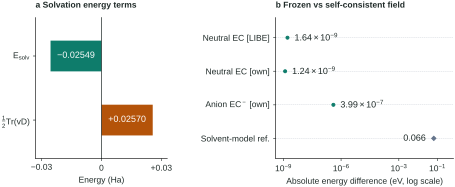
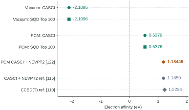
数据解读。在 SCF 账项中，常数项抵消了哈密顿量中已计入的溶剂势。独立的线性响应一致性检查约有 0.8% 的残余。溶剂化能 -0.694 eV（ε=40）。阴离子冻结场与自洽场相差 3.99×10×10⁻⁷ eV。计算得到的溶剂稳定化为 +2.647 eV。图 13 将 122 由两态修正量合成的 EA 与 115 参考对照。
科学结论：当前 C-PCM(40) 测例中，冻结场与自洽场的能量差很小，冻结场哈密顿量可接入已验证的 SQD→NEVPT2 流程。
局限性。结果限于所测几何、基组和溶剂设置。外部模板复用（HD-05）仍待裁决。组合验证图单独标明 CAS 层、NEVPT2 层和 CCSD(T) 参考。
与经典方法同台对比，量子采样路线的真实位置在哪里？
研究目的。比较不同选态和采样策略的能量偏差，并观察理想线路在两类模拟噪声下的样本覆盖。
计算方法。经典选态结果按子空间维度比较，以 FCI 为参考。理想线路按 shots 比较三种初始化，随后改变去极化概率和读出翻转率。
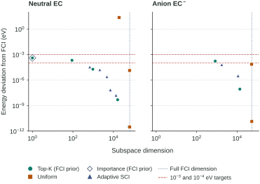
| 路线 | 原实验设置 | 子空间维度 | 相对 FCI 绝对偏差（eV） | 达到的精度线 |
|---|---|---|---|---|
| Top-K（FCI 先验） | K = 1 | 1 | 0.0003985931 | ≤ 1 meV |
| Top-K（FCI 先验） | K = 10 | 90 | 0.0002118239 | ≤ 1 meV |
| Top-K（FCI 先验） | K = 100 | 961 | 1.884769e-05 | ≤ 0.1 meV |
| Top-K（FCI 先验） | K = 1,000 | 16,129 | 4.846088e-09 | ≤ 0.1 meV |
| Top-K（FCI 先验） | K = 10,000 | 57,121 | 3.093576e-12 | ≤ 0.1 meV |
| 均匀抽样 | 200 次抽样 | 19,040 | 23.0812 | 未达 1 meV |
| 均匀抽样 | 1,000 次抽样 | 62,250 | 1.329205e-05 | ≤ 0.1 meV |
| 均匀抽样 | 5,000 / 20,000 次抽样 | 63,504 | 3.093576e-12 | ≤ 0.1 meV |
| 重要性抽样（FCI 先验） | 500 / 8,000 次抽样 | 1 | 0.0003985931 | ≤ 1 meV |
| 自适应 SCI | 筛选阈值 0.0003 / 0.0001 | 676 | 3.438718e-05 | ≤ 0.1 meV |
| 自适应 SCI | 筛选阈值 3e-05 | 2,116 | 1.631853e-05 | ≤ 0.1 meV |
| 自适应 SCI | 筛选阈值 1e-05 | 4,761 | 2.48524e-06 | ≤ 0.1 meV |
| 自适应 SCI | 筛选阈值 3e-06 | 7,056 | 7.105017e-08 | ≤ 0.1 meV |
| 自适应 SCI | 筛选阈值 1e-06 | 13,456 | 1.634955e-08 | ≤ 0.1 meV |
| 路线 | 原实验设置 | 子空间维度 | 相对 FCI 绝对偏差（eV） | 达到的精度线 |
|---|---|---|---|---|
| Top-K（FCI 先验） | K = 100 | 828 | 0.0001682414 | ≤ 1 meV |
| Top-K（FCI 先验） | K = 1,000 | 13,640 | 8.637884e-08 | ≤ 0.1 meV |
| 均匀抽样 | 1,000 次抽样 | 51,543 | 7.243706e-05 | ≤ 0.1 meV |
| 均匀抽样 | 20,000 次抽样 | 52,920 | 1.392109e-11 | ≤ 0.1 meV |
| 自适应 SCI | 筛选阈值 0.0001 | 1,736 | 6.499084e-05 | ≤ 0.1 meV |
| 自适应 SCI | 筛选阈值 1e-05 | 11,155 | 3.215015e-06 | ≤ 0.1 meV |
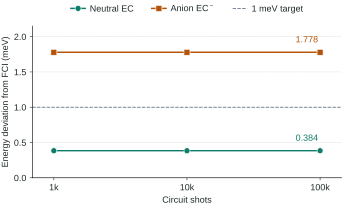
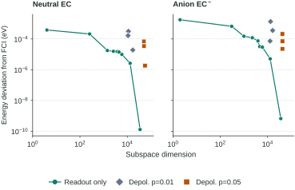
| 噪声条件 | 子空间维度 | 相对 FCI 绝对偏差（eV） | 有效样本率 |
|---|---|---|---|
| 无噪声（p = 0，r = 0） | 4 | 0.0003837556 | 99.04% |
| 仅读出翻转 0.5% | 256 | 0.0002120613 | 89.43% |
| 仅读出翻转 2% | 1,444 | 1.773185e-05 | 67.66% |
| 仅读出翻转 3.75%（校准档） | 2,601 | 1.56944e-05 | 50.20% |
| 仅读出翻转 4.62%（校准档） | 3,721 | 1.518553e-05 | 43.43% |
| 仅读出翻转 5.06%（校准档） | 4,489 | 1.408332e-05 | 41.16% |
| 仅读出翻转 5.5%（校准档） | 5,929 | 9.861442e-06 | 38.63% |
| 仅读出翻转 9%（校准档） | 13,225 | 2.626972e-06 | 23.96% |
| 仅读出翻转 16%（校准档） | 34,969 | 1.283834e-10 | 12.72% |
| 去极化 1%，读出翻转 0% | 11,236 | 0.0003149444 | 97.96% |
| 去极化 1%，读出翻转 0.5% | 10,816 | 0.0001662328 | 88.51% |
| 去极化 1%，读出翻转 2% | 17,161 | 1.915379e-05 | 67.09% |
| 去极化 5%，读出翻转 0% | 50,625 | 6.953597e-05 | 94.52% |
| 去极化 5%，读出翻转 0.5% | 51,076 | 3.459036e-05 | 85.44% |
| 去极化 5%，读出翻转 2% | 56,644 | 1.843153e-06 | 65.02% |
| 噪声条件 | 子空间维度 | 相对 FCI 绝对偏差（eV） | 有效样本率 |
|---|---|---|---|
| 无噪声（p = 0，r = 0） | 2 | 0.00177847 | 99.79% |
| 仅读出翻转 0.5% | 306 | 0.0006664062 | 90.08% |
| 仅读出翻转 2% | 1,008 | 0.0001508381 | 68.14% |
| 仅读出翻转 3.75%（校准档） | 2,279 | 0.0001197814 | 50.52% |
| 仅读出翻转 4.62%（校准档） | 3,933 | 7.454263e-05 | 43.66% |
| 仅读出翻转 5.06%（校准档） | 4,680 | 3.199167e-05 | 41.31% |
| 仅读出翻转 5.5%（校准档） | 6,048 | 2.93807e-05 | 38.64% |
| 仅读出翻转 9%（校准档） | 12,980 | 5.101617e-06 | 23.89% |
| 仅读出翻转 16%（校准档） | 36,462 | 6.604786e-10 | 12.32% |
| 去极化 1%，读出翻转 0% | 13,440 | 0.001362303 | 98.74% |
| 去极化 1%，读出翻转 0.5% | 16,482 | 0.0003569514 | 89.22% |
| 去极化 1%，读出翻转 2% | 12,840 | 7.320184e-05 | 67.60% |
| 去极化 5%，读出翻转 0% | 42,680 | 0.0002120703 | 95.30% |
| 去极化 5%，读出翻转 0.5% | 42,924 | 7.188756e-05 | 86.11% |
| 去极化 5%，读出翻转 2% | 42,816 | 2.27447e-05 | 65.45% |
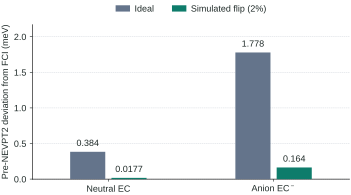
数据解读。均匀采样存在连通性悬崖：200 次抽取偏差 23.1 eV（1.9 万维子空间却漏掉主导构型），1000 次后骤降入 meV 带——维度不是有效资源，覆盖才是。在该中性 EC 测例中，SCI 在 676 维达到 3.44×10⁻⁵ eV，|c|² 重要性采样集中在一个构型。理想线路的三种初始化在 1k、10k 和 100k shots 上得到相同偏差。去极化和读出翻转在部分模拟设置下均降低偏差，比较时还需看子空间维度与有效样本率。在 127 的部分通过结果中，末端翻转降低了 NEVPT2 修正前相对 FCI 的能量偏差，同时降低有效样本率。
科学结论：在已测设置中，主导构型覆盖影响 SQD 的能量偏差。模拟噪声可改变覆盖和精度，也会改变有效样本率。
局限性。116 为经典代理层；123/124 为理想线路模拟（layer ii）+ 信道噪声模拟，真机层（iii）未跑；127 部分通过，仅限所测模型/种子/后处理；先验知情路线端到端含 FCI 先验分账。
EC 的近单参考结论，在真正的多参考体系上还成立吗？采样路线的最优性会如何重排？
研究目的。EC 是近单参考体系（top-1 构型即达 4×10⁻⁴ eV），这限制了结论的普适性。真正的多参考体系（键断裂）需要多少构型？哪条采样路线更强？
计算方法。先筛选候选体系，再用 N₂-CAS(6e,6o) 比较四个键长点上的确定性选态、均匀采样、重要性采样和 SCI。
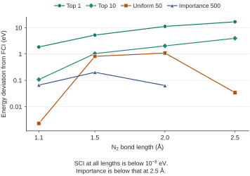
数据解读。筛选出主候选 N2-CAS(6e,6o)（N2/CAS66/R2.0，mr_index 3.294）。。随键长增加（w₁ 从 0.95 降至 0.13），Top 1 偏差从 1.85 eV 升至 16.72 eV。四个测点中，均匀 50 次抽样的能量偏差都低于 Top 1 和 Top 10；SCI 的偏差均低于 10⁻⁸ eV。
科学结论：这组 N₂ 测试显示，伸键过程中单构型近似误差增大。路线比较需同时说明选态和抽样预算。
局限性。N2/H2/H4 解离体系为类比，非 EC 直算；经典代理口径；结果须标注类比关系。
不同模型与计算口径下，EC 相对 PC 的差值如何变化？
口径说明。下图分别列出 Vollmer 等报告的裸态 EC–PC +61 mV、单 Li⁺ 闭环 EC–PC −90 mV，以及 Lee 等含锂模型 EC–PC +50 mV。它们来自不同研究，配位模型、计算方法和参比口径不同，仅供文献上下文比较，不代表本项目结果，也不可视为同一系列可直接比较的数据。
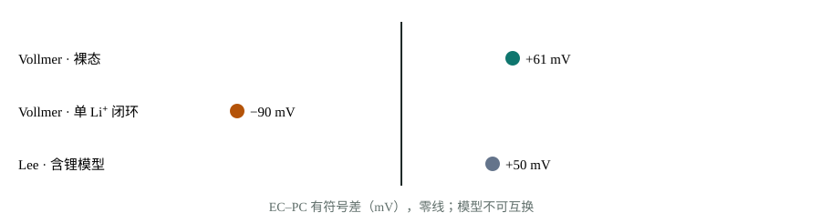
局限性。跨论文的差值不能替代统一计算条件下的比较；本图不提供误差棒或项目数据。